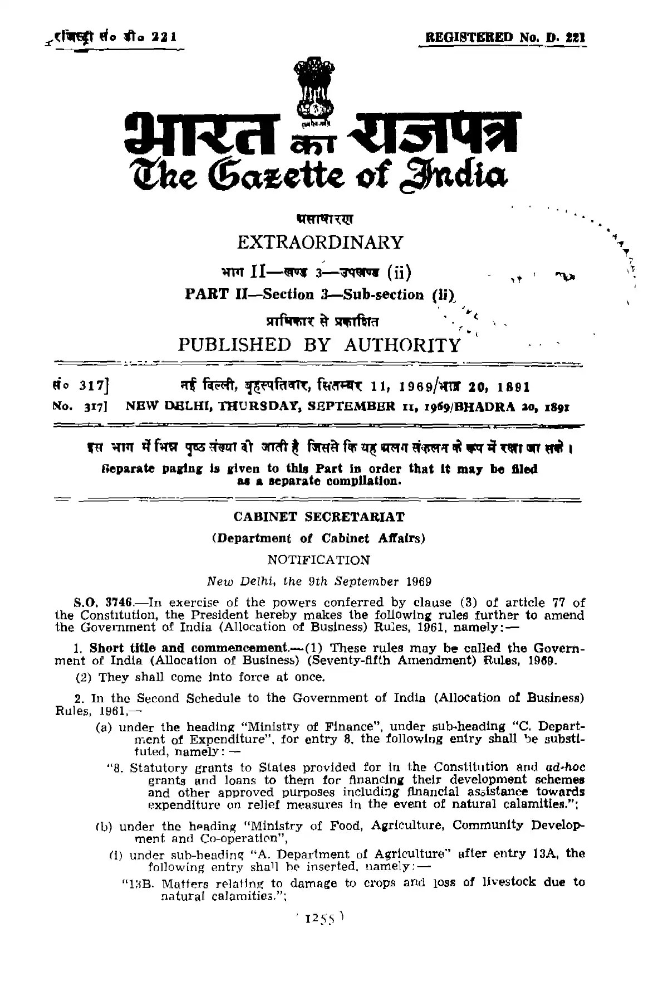
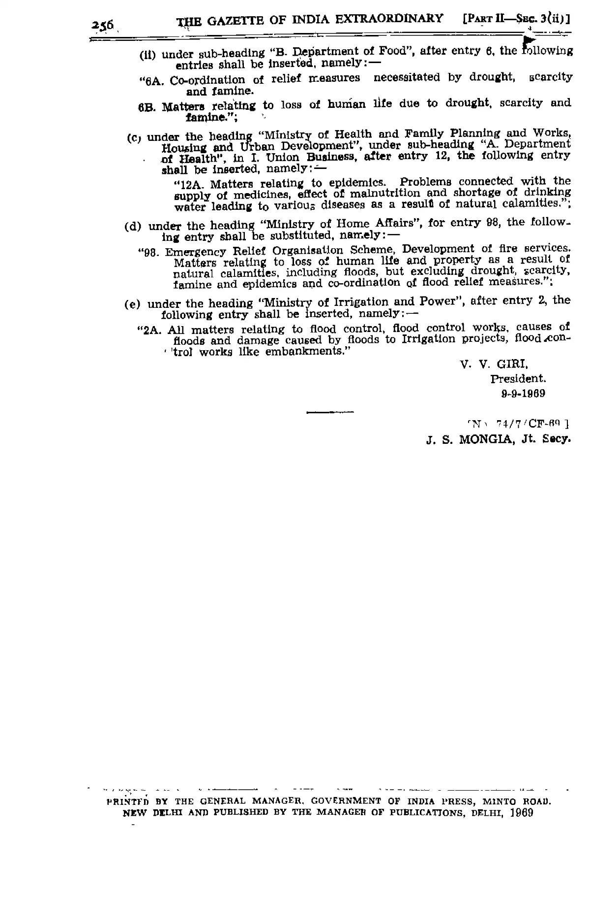

Amendment #75 (S.O. 3746, 1969)
6 changes: 0 to the First Schedule, 6 to the Second Schedule. 6 applied
The order, page by page
Page 1 of 2

12Schedule 2 › Ministry of Finance › Depart- ment of Expenditure › entry 8
- 48. Statutory grants to States provided for in the Constitution and ad hoc grants and loans to them for financing their development schemes and other approved purposes including fnancial assistance towards expenditure on relief measures in the event of natural calamities.
applied at schedule 2 › ministry MINISTRY OF FINANCE › department C › entry 8 in the Rules after #75
after Schedule 2 › Ministry of Food, Agriculture, Community Develop- ment and Co-operation › Department of Agriculture › entry 13A
- 13B. Matters relating to damage to crops and loss of livestock due to natural calamities.
applied at schedule 2 › ministry Ministry of Food, Agriculture, Community Development and Cooperation › department A › part I ›… in the Rules after #75
Page 2 of 2

3456after Schedule 2 › Ministry of Food, Agriculture, Community Develop- ment and Co-operation › Department of Food › entry 6
- 6A. Co-ordination of relief measures necessitated by drought, Bcarcity and famine.
- 6B. Matters relating to loss of human life due to drought, scarcity and famine.
applied at schedule 2 › ministry Ministry of Food, Agriculture, Community Development and Cooperation › department B ›… in the Rules after #75
after Schedule 2 › Ministry of Health and Family Planning and Works, Housing and Urban Development › Department of Health › I. Union Business › entry 12
- 12A. Matters relating to epidemics. Problems connected with the supply of medicines, effect of malnutrition and shortage of drinking water leading to various diseases as a result of natural calamities.
applied at schedule 2 › ministry MINISTRY OF HEALTH AND FAMILY PLANNING AND WORKS. HOUSING & URBAN DEVELOPMENT › department A ›… in the Rules after #75
Schedule 2 › Ministry of Home Affairs › entry 98
- 98. Emergency Relief Organisation Scheme, Development of fire services. Matters relating to loss of human life and property as a result of natural calamities, including floods, but excluding drought, scarcity famine and epidemics and co-ordination of flood relief measures.
applied at schedule 2 › ministry MINISTRY OF HOME AFFAIRS › part I › group_heading The following subjects which are relatable to… in the Rules after #75
after Schedule 2 › Ministry of Irrigation and Power › entry 2
- 2A. All matters relating to flood control, flood control works, causes of floods and damage caused by floods to Irrigation projects, flood.control works like embankments.
applied at schedule 2 › ministry MINISTRY OF IRRIGATION AND POWER. › entry 2A in the Rules after #75
How this document was read
From the Government of India (Allocation of Business) Rules, 1961 and their amendments, as published by the Cabinet Secretariat (cabsec.gov.in), read by orgpedia. The readings of the older scanned gazettes have known gaps.